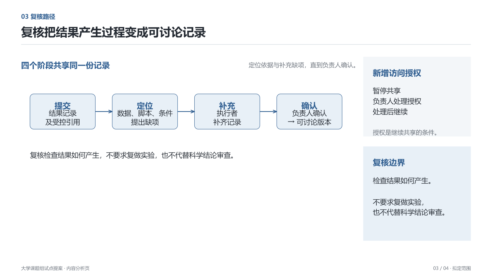

咨询排版提示对照composition-archive-round-01
8 页 · 最终文件 SHA-256 b21fc6c46c23ddb8…
评审记录
父任务视觉评审待完成。
composition-product-b-round-01
11 页 · 最终文件 SHA-256 cbef3fd5c34fb7a6…
评审记录
父任务视觉评审待完成。
focus-a-round-01
4 页 · 最终文件 SHA-256 a63034315952456c…
评审记录
# 首轮 A：不通过，保留作独立生成证据
父任务逐页查看四页最终渲染并重跑最终文件核对。主表与权限分区比旧版清楚，P1 形成主分析和辅助条件的不同分工。仍不能作为整稿审美通过。
- P1：主体行对应成立，权限区可读；保存纪律更适合回到对应条目，避免右区同时承担两种职责。英文眉题是额外装饰。
- P2：比较方向成立，但“最大边界”与代价重复；建议、未证明效率和页底说明有多次复述。
- P3：九个节点把授权例外膨胀为第二条同等重要流程。执行者提交、另一成员定位的角色未在图中明确。不能用关键词覆盖宣称关系无遗漏。
- P4：上下分工初步成立，但末尾深色横条重复第四周决定并抢夺视觉重心。
父审确认 4 页原生 PPTX 渲染、画布检查成功，9 条连接绑定且无穿字。实际字角色 4 项不符，均 note 被加粗。父审自动发现器未匹配总节点清单，节点检查自动覆盖缺失；不能把该状态读作 0 问题。P2 一项分隔线净距候选。首轮不修改，另开 round-02 修订。
focus-a-round-03
4 页 · 最终文件 SHA-256 5c5d4f4c6494d51e…
评审记录
# A 反馈收尾：可保留的四页候选，尚不证明稳定性
父任务看过 round-02 全四页及 round-03 修改的 P1。P2–P4 保持上一轮编排。已重跑最终 PPTX 渲染、画布、节点和连接检查，源文件 SHA 见 verification.json。
- P1 主表、关键行和独立权限区域形成主次。权限色面缩至内容高度，原始数据保持原貌已恢复；图表式文字分析与旁注能够共同成页。
- P2 两个真实维度支持范围取舍；共同对照列成立，删除伪造的第三维度后更清楚。
- P3 正常路径为主要对象，授权例外从属；提交、定位、补充和确认角色齐全。局部结构有明确作用。
- P4 时间计划与评价/停止条件分工明确。删除深色总结条后重心回到过程与判断。
本组具备继续测试的版面基础：结论先行、行列对应、少量分区色、局部关系加条件解释。仍是定性材料四页测试，不代表用户全部参考图的质感已复刻，也不代表无反馈 Luna 首轮稳定。形成当前结果用了两次文字反馈，不能计为独立提示成功。不接入正式 Skin。
最终确定性检查：文字角色 81/81 符合；适用页节点 P3 5、P4 3 均无问题；6 条连接绑定且无穿字；画布、容量、交叠、主题和换行候选均通过。内容核对包含此前遗漏的原始数据保持原貌及另一个成员复核角色。
focus-b-round-01
4 页 · 最终文件 SHA-256 d14fdd6c66c9d965…
评审记录
# 首轮 B：不通过，保留作独立生成证据
父任务看完四页最终渲染并重跑文件核对。分区明确，但执行仍偏向大底板和复述，未达到参考的分析主次。
- P1：五类记录与权限区有不同职责；右区再次总结没有增加信息，段落被拉开填满侧栏。
- P2：右区重复建议两次；两方案被铺成大行框，文字自然高度未落实。
- P3：节点标题与正文视觉上贴得太近，边界在主区与右区重复。执行者提交、另一成员定位并提缺项的角色未完整表达。
- P4：左侧流程偏薄，右侧长段落堆叠；底部深蓝条违背主证据优先，重复拟定性质。
父审重跑渲染、画布检查成功，5 条连接绑定且无文字相交。实际字体角色有 11 项字重不符，生成者原报告未覆盖这项失败。父审自动发现器未匹配总节点清单，节点自动覆盖缺失。P1/P2 分隔线净距候选 4/3 项。首稿未实际调用结构；使用记录只给目录候选与不用理由，未提供具体资产阅读证据，结构适配不足。
保留首稿，round-02 根据文字反馈修订。反馈后的提升不算独立首轮成功。
第 1 页第 2 页
第 3 页第 4 页 focus-b-round-02
4 页 · 最终文件 SHA-256 d0f68ee9aef019e6…
评审记录
# B 反馈修订：有改善，整体仍不通过
父任务查看全部四页并重跑最终文件验证。P2 的复述已减少，P3 将短动作与角色放入节点、解释移至节点下方，角色清晰度改善。仍有不足：P1 权限面远高于实际段落；P3 主体较薄且末节点说明断行为“版/本”；P4 左时间链与右长面板视觉分量不均，评估内容挤在右侧。不能把侧栏出现当成参考风格成立。
确定性角色检查 84/84 通过。已提供具体资产 inspect 记录。结果作为反馈修订记录保留，不视作无反馈独立首轮成功。
执行者局部重建曾改到首稿 PPTX 与四个 layout。父任务发现 Git 变化后，从此前提交精确恢复这五个文件；首稿最终 SHA 仍为 d14fdd6c66c9d96552136c9e84f08e5b8ca65a590cacac82ff8a23915f6af035。round-02 独立保留。